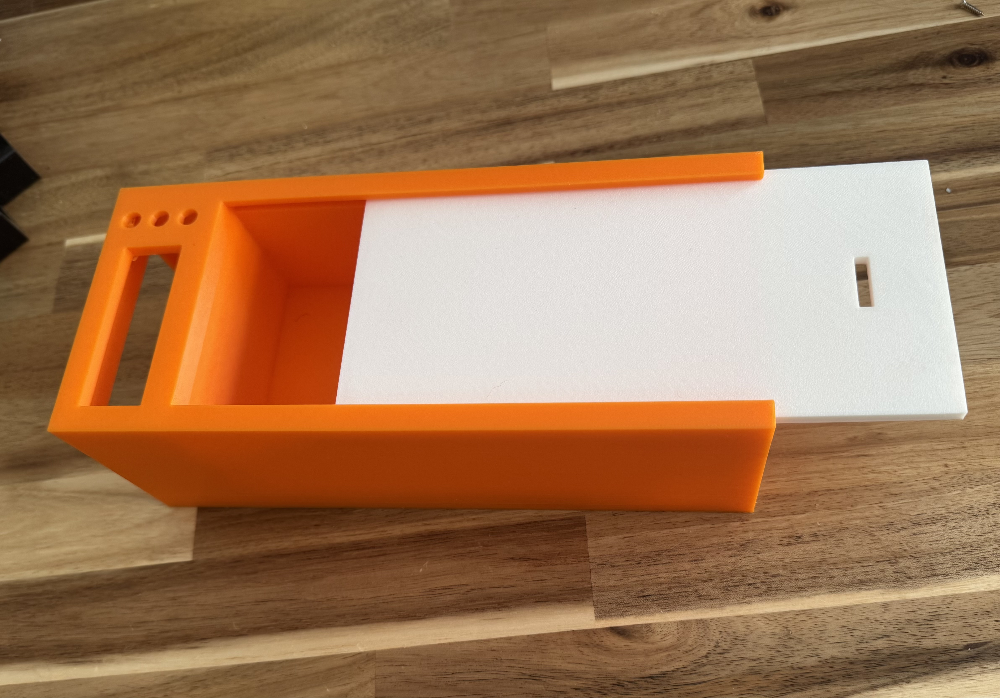
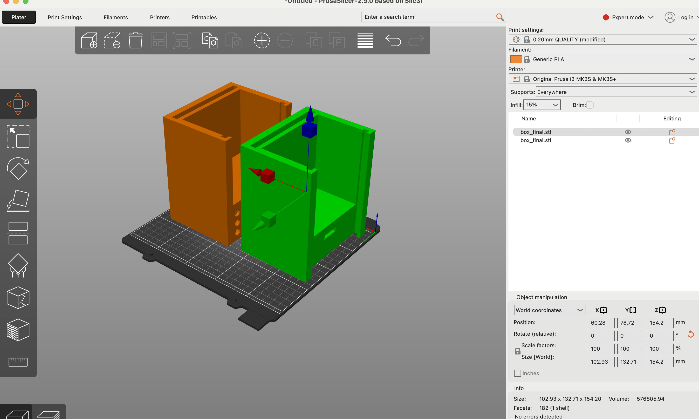
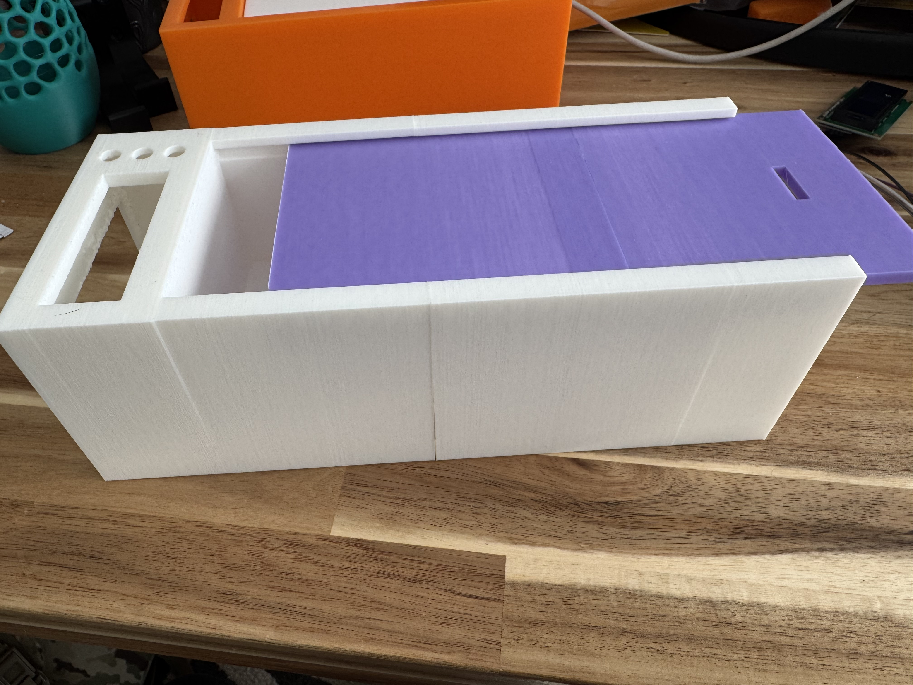

In this week we were tasked with showing meaningful progress toward our "integrated-design" milestone—the stage where the electronic backbone I created finally meets a physical enclosure and starts looking like a real product rather than a tangle of jumper wires. My goal for the week, therefore, was to design and begin manufacturing the external box that will house the circuitry, screen, buttons, servo latch, and phone compartment.
I began in Fusion 360 with one hard constraint in mind: the interior cavity has to fit a full-size iPhone with a charging cable attached. That single dimension drove almost everything else. From there I carved a recessed pocket on the front face for the OLED screen and another pocket beneath it for three momentary push-buttons that will eventually let me arm, or set bedtime. On the opposite side of the housing I cut a matching slot in both the main body and the sliding lid so a micro-servo can throw a latch between them and physically lock the phone inside. I hollowed out two "service bays," one on each flank, big enough to seat the ESP32 board, a small power-management module, and the mess of jumper leads. To keep that wiring from looking like spaghetti, I routed a shallow channel under the floor that lets cables sneak from one bay to the other, then pop up through tidy rectangular ports. Finally, I drilled a tiny pass-through near the lid track for the reed-switch leads so the magnet in the lid can still tell the backbone when the box is truly closed.
Design in CAD was the fun part; printing is where reality pushed back. Even after stripping out every ounce of unnecessary plastic, the finished model is longer than the build volume of our classroom printers.
My first attempt—shrinking the model until it barely squeaked onto the bed—looked cute on the slicer preview but, once printed, was not going to work.
Rather than redesign the whole enclosure, I opened the model in PrusaSlicer and used its "cut" tool to slice the box cleanly down the middle. That let me print the two halves separately, each within the printer's limits, and then re-join them with super-glue. The seam should be invisible once I give the entire enclosure a light sanding.
By the end of the week I had a full-length, two-piece shell glued together, the screen test-fit in its cutout, and pilot holes drilled for the buttons and servo.
Next steps are to embed brass heat-set inserts for the lid rails, mount the electronics in their bays, and start dressing the cable runs so everything looks intentional instead of improvised. With the enclosure now physically in hand—and big enough to do the job—I can spend the remaining weeks in the the remaining aspects of this build.
← Back to Home